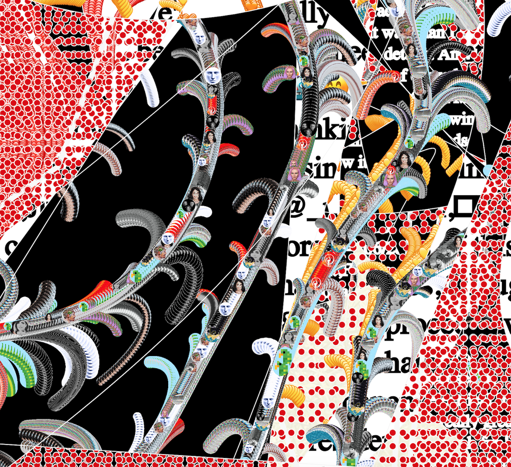

Several People Are Typing

“Several People Typing”, my final piece for the Vertical Crypto Art Residency, is a nod to the history of scrapbooks and photo collages – deemed “women’s work” or “women’s accomplishments” during the Victorian era. These collages were often about identity, memory and the experience of new technologies of the day.
Algorithmically generated and coded in p5js, the collage combines snippets from a variety of sources: text from the highly active VCA discord during the residency; tweets from the @vcaresidency feed; IRL objects (e.g. a ring light, a trackball mouse) that sat on my desk during the residency; and flow fields “like” ❤️ hearts as well as profile pictures of other artists in the residency.
The pfps (profile pictures) become visible up close in a print, or when you zoom into the digital image. They allude to photographic portraits of the Victorian era – a new and accessible technology at that time – that were often cut out and pasted into women’s collages.

The background displays layered graphs of everyday data – e.g. the temperature in NYC, and price charts for ETH, XTZ and the S&P. On the lower right sits an ellipsis, a symbol ever-present in real-time chat that shows when a conversation is paused… while people are typing.

“Several People Are Typing” was published on Objkt.